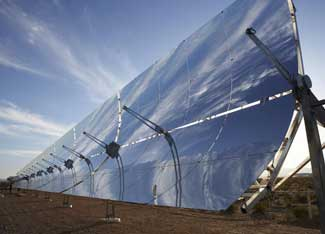

After emerging in 2006 from 15 years of hibernation, the solar thermal power industry experienced a surge in 2007, with 100 megawatts of new capacity coming online worldwide. During the 1990s, cheap fossil fuels, combined with a loss of state and federal incentives, put a damper on solar thermal power development. However, recent increases in energy prices, escalating concerns about global climate change, and fresh economic incentives are renewing interest in this technology.
Considering that the energy in sunlight reaching the earth in just 70 minutes is equivalent to annual global energy consumption, the potential for solar power is virtually unlimited. With concentrating solar thermal power (CSP) capacity expected to double every 16 months over the next five years, worldwide installed CSP capacity will reach 6,400 megawatts in 2012 - 14 times the current capacity. (Click here to see the history of concentrated solar thermal power capacity since 1980.)
Unlike solar photovoltaics, which use semiconductors to convert sunlight directly into electricity, concentrated solar thermal plants generate electricity using heat. Much like a magnifying glass, reflectors focus sunlight onto a fluid-filled vessel. The heat absorbed by the fluid is used to generate steam that drives a turbine to produce electricity. Power generation after sunset is possible by storing excess heat in large, insulated tanks filled with molten salt. Since CSP plants require high levels of direct solar radiation to operate efficiently, deserts make ideal locations. [Click here to read a New York Times article about the potential of concentrated solar power.]
Two big advantages of solar thermal plants over conventional power plants are that the electricity generation is clean and carbon-free and, since the sun is the energy source, there are no fuel costs. Energy storage in the form of heat is also significantly cheaper than battery storage of electricity, providing CSP with an economical means to overcome intermittency and deliver dispatchable power.
The United States and Spain are leading the world in the development of solar thermal power, with a combined total of over 5,600 megawatts of new capacity expected to come online by 2012. Representing over 90 percent of the projected new capacity by 2012, the output from these plants would be enough to meet the electrical needs of more than 1.7 million homes.
The largest solar thermal power complex in operation today is the Solar Electricity Generating Station in the Mojave Desert in California. Coming online between 1985 and 1991, the 354-megawatt complex has been producing enough power for 100,000 homes for almost two decades. In June 2007, the 64-megawatt Nevada Solar One plant became the first multi-megawatt commercial CSP plant to come online in the United States in 16 years.
Today, more than a dozen new solar thermal plants are being planned in the United States, with some 3,100 megawatts expected to come online by 2012. (Click here to see a worldwide list of proposed solar thermal projects.) Some impressive CSP projects in the planning stages include the 553-megawatt Mojave Solar Park in California, the 500-megawatt Solar One and 300-megawatt Solar Two projects in California, a 300-megawatt facility in Florida, and the 280-megawatt Solana plant in Arizona.
In Spain, the first commercial-scale CSP plant to begin operation outside the United States since the mid-1980s came online in 2007: the 11-megawatt PS10 tower. The tower is part of the 300-megawatt Solúcar Platform, which, when completed in 2013, will contain 10 CSP plants and produce enough electricity to supply 153,000 homes while preventing 185,000 tons of carbon dioxide (CO2) emissions annually. All told, more than 60 plants are in the pipeline in Spain, with 2,570 megawatts expected to come online by 2012.
Economic and policy incentives are partly responsible for the renewed interest in CSP. The incentives in the United States include a 30 percent federal Investment Tax Credit for solar through the end of 2008, which has good prospects for being extended, and Renewable Portfolio Standards in 26 states. California requires that utilities get 20 percent of their electricity from renewable sources by 2010, and Nevada requires 20 percent by 2015, with at least 5 percent from solar power. The primary incentive in Spain is a feed-in tariff that guarantees that utilities will pay power producers €0.26 (40 cents) per kilowatt-hour for electricity generated by CSP plants for 25 years.
In the southwestern United States, the cost of electricity from solar thermal plants (including the federal tax credit) is roughly 13 to 17 cents per kilowatt-hour, meaning that concentrated solar power with thermal storage is competitive today with simple-cycle natural gas-fired power plants. The U.S. Department of Energy aims to reduce concentrated solar power costs to 7 to 10 cents per kilowatt-hour by 2015 and to 5 to 7 cents per kilowatt-hour by 2020, making it competitive with fossil-fuel-based power sources.
Outside the United States and Spain, regulatory incentives in France, Greece, Italy and Portugal are expected to stimulate the installation of 3,200 megawatts of solar thermal capacity by 2020. China anticipates building 1,000 megawatts by that time. Other countries developing solar thermal include Australia, Algeria, Egypt, Iran, Israel, Jordan, Mexico, Morocco, South Africa and the United Arab Emirates. (Click here to see a map of CSP development.)
Using solar thermal plants to power electric vehicles could further reduce CO2 emissions and provide strategic advantages by relaxing dependence on oil. In Israel, a tender issued by the Ministry for National Infrastructures for the construction of solar thermal plants and a 19.4 cents per kilowatt-hour feed-in tariff for solar power systems are sparking interest in developing up to 250 megawatts of concentrated solar power in the Negev Desert. This would produce enough electricity to run the 100,000 electric cars that Better Place, a company focused on building an electric personal transportation system, is planning to put on Israeli roads by the end of 2010.
A study by Ausra, a solar energy company based in California, indicates that over 90 percent of fossil fuel generated electricity in the United States and the majority of U.S. oil usage for transportation could be eliminated using solar thermal power plants - and for less than it would cost to continue importing oil. The land requirement for the CSP plants would be roughly 15,000 square miles (38,850 square kilometers, the equivalent of 15 percent of the land area of Nevada). While this may sound like a large tract, CSP plants use less land per equivalent electrical output than large hydroelectric dams when flooded land is included, or than coal plants when factoring in land used for coal mining. Another study, published in Scientific American, proposes using photovoltaic and solar thermal plants to produce 69 percent of U.S. electricity and 35 percent of total U.S. energy, including transportation, by 2050.
Solar thermal plants on less than 0.3 percent of the desert areas of North Africa and the Middle East could generate enough electricity to meet the needs of these two regions plus the European Union. Realizing this, the Trans-Mediterranean Renewable Energy Cooperation - an initiative of The Club of Rome, the Hamburg Climate Protection Foundation and the National Energy Research Center of Jordan - conceived the DESERTEC Concept in 2003. This plan to develop a renewable energy network to transmit power to Europe from the Middle East and North Africa calls for 100,000 megawatts of concentrated solar power to be built throughout the Middle East and North Africa by 2050. Electricity delivery to Europe would occur via direct current transmission cables across the Mediterranean. Taking the lead in making the concept a reality, Algeria plans to build a 3,000-kilometer cable between the Algerian town of Adrar and the German city of Aachen that will export 6,000 megawatts of solar thermal power by 2020.
If the projected annual growth rate of concentrated solar power through 2012 is maintained to 2020, global installed CSP capacity would exceed 200,000 megawatts - equivalent to 135 coal-fired power plants. With billions of dollars beginning to flow into the solar thermal industry and United States restrictions on carbon emissions imminent, concentrated solar power is primed to reach such capacity.
|
 GERI KODEY/NREL A recent study indicates that over 90 percent of fossil fuel generated electricity in the United States and the majority of U.S. oil usage for transportation could be eliminated using solar thermal power plants - and for less than it would cost to continue importing oil. |
|
|